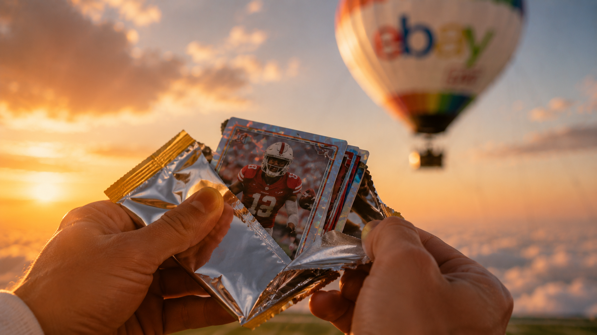

Hero — inset treatments
Ten ways to lay the two supporting shots (pack break + cheer) over the hero, bigger and mostly grouped to the right. Circle cuts, rounded cards, faded/feathered edges, tilted prints, a floating card. Tell me the number(s) you like and I'll build it into the deck. Full-width so you can judge them at real scale.
1Stacked circles, bottom-rightTwo big circles overlapping in the corner. Clean, bold, insets much larger.



2Overlapping photo cardsTwo rounded rectangles, slightly overlapping and tilted, like laid-down prints.
3Big + small circle clusterOne large circle anchored right, a smaller one tucked beside it.
4Faded rectangles, rightTwo shots with soft feathered edges blending into the hero. Subtle, editorial.
5Filmstrip, flush right edgeTwo tall panels docked to the right edge. Feels like a broadcast lower-third.
6Floating glass cardA frosted card on the right holding both shots plus a tiny label. Most designed.
Inside the shoot
7Bottom filmstrip rowThree small prints in a row along the bottom. Reads like a caption strip.

8Tilted prints, bottom-rightTwo portrait prints fanned at angles. Playful, scrapbook energy.
9Single big circleJust one large circle (the pack break). Simplest, lets the hero breathe.
10Faded duo on a corner glowTwo feathered shots sitting on a soft dark corner gradient, so they read clearly.